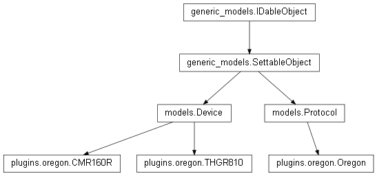

plugins.oregon¶

API¶
- class plugins.oregon.Oregon(kernel)¶
Bases: models.Protocol
Main class of a protocol plugin.
- decode_message(radio_sequence)¶
Processes a radio sequence received by the radio modem into a message understable by the protocol. The implementation of the sequence processing is , for the moment, a hard-coded finite-state machine.